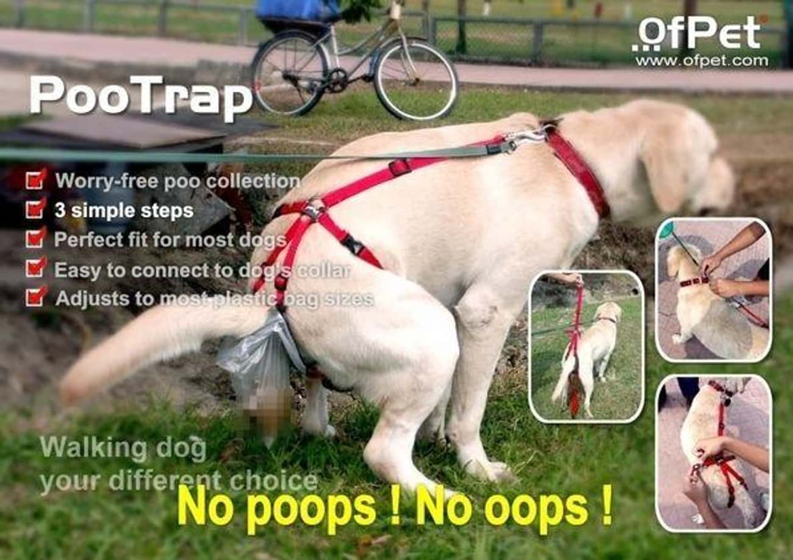
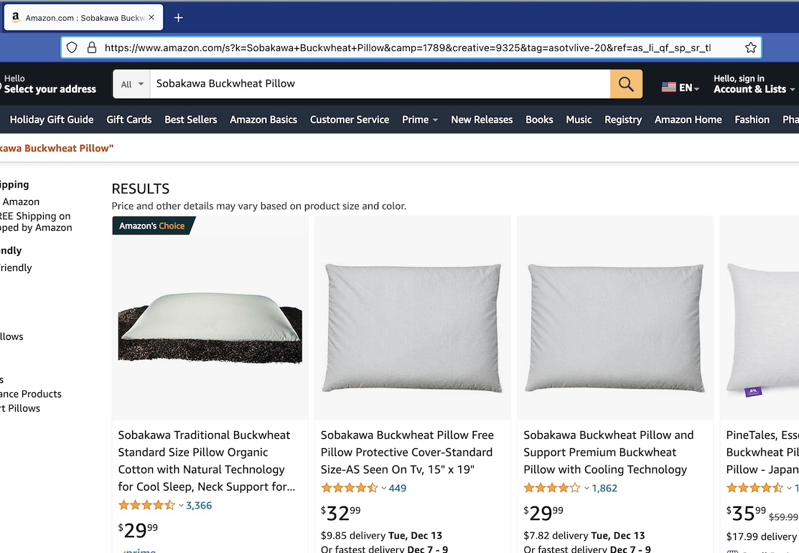

December 5th, 2022 — Josh
To all cannibals or organ meat enjoyers that may have been intrigued by the title, please look elsewhere :P, this post is not at all about foodstuffs.
The early 2000s were a time of many interesting phenomena, like Linkin Park, Aeropostale, really baggy pants, and T.V. commercials for weird shit nobody actually needs. I'm talking the likes of the late Billy Mays and his OxiClean, or this ingenius PooTrap, which you can claim your free trial for if you call 888-888-8888 within the next 37.5 seconds:

Well, the absolute mother lode of these products is As Seen On TV Inc., every single product they carry is one of these things. I highly encourage you to take a look at their inventory.
If you browse their website for long enough you might run into products that cost $0.00. I was intrigued by that, so I figured I'd go through and add as many $0 products to my cart as I could find, then see what happens (free money!?!?).
Once I'd opened a number of tabs, I navigated over to the Sobakawa Buckwheat Pillow and clicked 'Add to cart'. It opened amazon.com with search results for 'Sobakawa Buckwheat Pillow'. "Huh, weird...", I thought to myself, "let's try a different one". I navigated to the Swivel Sweeper Max and hit 'Add to cart' -- once again it opened amazon.com and searched for 'Swivel Sweeper Max'.
"Well, I wasn't really expecting to get away with buying something for 0 dollars", I scoffed, "no surprise here". But I had a weird feeling, so just to make sure that I was sane I found a product that was listed with a non-zero price (the Rabbit TV for $8.75) and tried to add it to my cart. It opened amazon.com and searched for Rabbit TV. I noticed that the URL had a referral code.
What???
After repeating this exercise a few times I realized that I was shopping at a store which does not exist. There is no store, the cake is a lie. The entire premise of the business is to reel you in with insane products at insane prices (like $0.00), just to redirect you to Amazon with their referral code and get paid a percentage when you go on to buy something. Here's a link to the Amazon affiliate program if you're not familiar: https://affiliate-program.amazon.com
I was pretty shocked by this. They can literally list any product they want at any price, the store is only limited by the owner's imagination. It's the store of your dreams [1].
And yet this is still a valid business model -- they get paid when people buy stuff on Amazon using their links, all without the need of a warehouse or employees, or any physical resources at all really. You and I have all the means of production necessary to make this store in front of us right now.
[1] Maybe you see why I had to name this post provocatively. Only a mythical name could capture the spirit of this imaginary store, a boring taxonomic description wouldn't cut it. Myth and spirit are really important, don't underestimate the power of this over the human psyche. See: Fascism, God-Building in the newly-established Soviet Union after they had dismantled religion.
Though I don't know much about what running a real store is like, I can imagine that the store's characteristics are heavily constrained by things like:
All of those constraints could probably easily overpower your desire to make the store of your dreams -- a store that brings joy to its patrons, carries/produces goods you feel passionate about, contributes to its host community, a store that is beautiful, in which humans feel at home.
The AsSeenOnTVAmazonHellscapeDreamStore model (hereafter TVAMHELL) is a peephole into a world with no constraints, a hack that leaks the infinitude of computing into real life, the domain of humans and their societies. (Cryptocurrencies tread on similar infinite land, except their molten core consists of gambled money, while this hack is dependent on Amazon's sprawling fiefdom).
In your TVAMHELL dream store you are only limited by what you can imagine. Take a look at my latest listings:
I am actually deadass, with an Amazon referral link I can make money from this. Now I can focus all of my brainpower on thinking of the coolest possible things to sell and the best prices to sell them at, whether those things really exist or not.
Let's take this a step further. If I get bored with the laborious process of designing random products in GIMP and uploading them to my TVAMHELL store, I can write an automated storekeeper program to take over for me. We can employ the horde of 2022's Artificial Intelligence models (hot on the heels of DALL-E 2) for help. (If you haven't been keeping up with the overwhelming new developments in this area, search up some of the following: DALL-E 2, Stable Diffusion, GPT-3, ChatGPT, GitHub Copilot, etc.)
The process seems almost trivial...
The whole thing is predicated on a hack (you could maybe even consider it a scam), so although it has the potential to earn real money if you get enough traffic somehow, for the most part it's another iteration of the ThisSomethingDoesNotExist meme. But what about when we get to the point of post-scarcity with 3D printers? We can add one more step to the pipeline... invoke a 3D printing job to summon your product into the physical world. I'm not joking, there are already AI models that can generate CAD files... if I put on my futurist hat for a second, it really seems like this is something that can happen eventually.
The future is fucking weird!
Peace